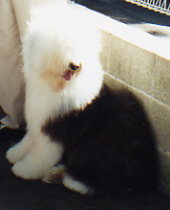
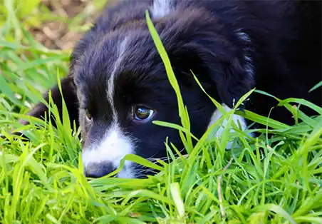

The well groomed dog

Why grooming?
It's always a pleasure to look at your dog when it's been freshly groomed. You feel like a responsible owner and people recognise this.
But that's not all! Your dog feels better, too. She's been to Shazza and feels comfortable - no tangles, clean skin, and ready for life's next big adventure.
Start with your puppy!
It's never too late to start grooming your puppy. Start by brushing him gently, each night. Brush the back, tummy, legs, head and tail.
This is important for all breeds, as it helps tame your puppy and helps with bonding.
For long haired breeds, this is particularly important. Longer coats can get tangled and knotted very quickly
Make a habit of introducing you puppy to Shazza early. This will become a pleasant experience for them and make it easier for you to groom between visits.

Our Services
Shazza's Grooming offers a wide range of services from a simple shampoo and cut to a full shampoo, cut and dry with nail trimming.
Prices vary according to the size of the dog and the type and condition of it's coat. Shazza has basic prices but if, for example, de-matting or de-shedding is needed there will be an extra charge.
So it is well worth your while to brush and comb your dog's coat regularly.
See the 'prepare' page for hints on how to keep your dog's coat knot free during grooming sessions.
Baseline prices
- Small breeds: from $70
- Medium breeds: from $90
- Large breeds: from $110
Small breeds (up to 15 kg)
Chihuahuas, Pomeranians, Toy & Teacup poodles, Pugs, Shih Tzus, and some crosses of these breeds
Medium breeds (up to 21 kg)
CMiniature Poodles, Miniature Schnauzers, Kelpies, Border Collies, Shelties, Whippets, Corgis, miniature sized crosses
Large breeds (over 21 kg)
Golden Retrievers, Labradors, Standard Poodles, Old English Sheepdogs and some crosses of these breeds